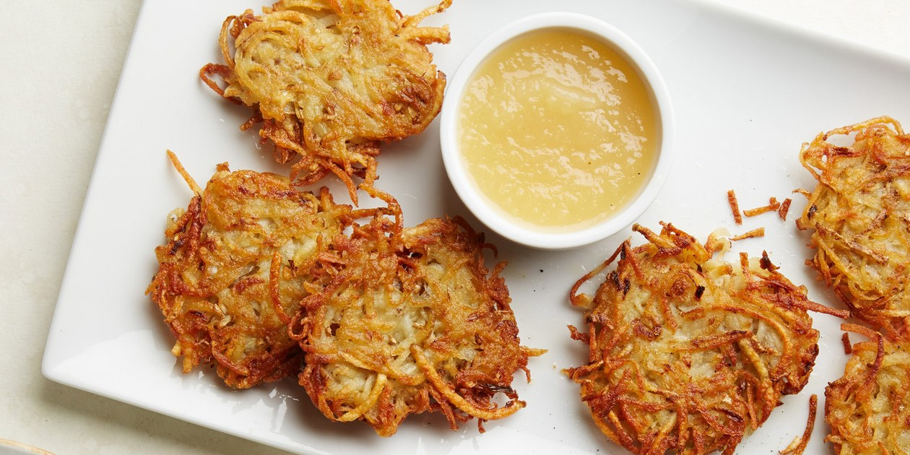

Potatoes Are Very Good
They come in many diffferent shapes and sizes
Types of potatoes:
- Baked Potato
- French Fries
- Mashed Potatoes
- Waffle Fries
- Sweet Potato
- Vitelotte Potatoes
- Latkes
- Potato Chip
- Tater Tots
And so many more because they are an amazing food

Below is a video of how to make french fries